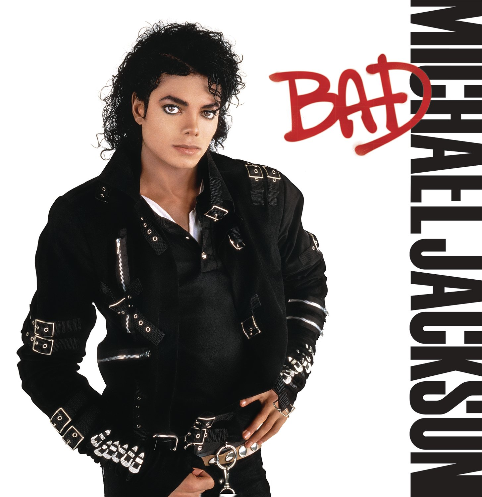

BAD
 Bad is the seventh studio album by the American singer and songwriter Michael Jackson. It was released on August 31, 1987, by Epic Records, nearly five years after Jackson's previous album, Thriller (1982). Written and recorded between January 1985 and July 1987, Bad was the third and final collaboration between Jackson and producer Quincy Jones, with Jackson co-producing and composing all but two tracks. Jackson notably adopted an edgy look and sound with Bad, departing from his signature groove-based style and high-pitched vocals. The album incorporates pop, rock, funk, R&B, dance, soul, and hard rock styles. Jackson also experimented with newer recording technology, including digital synthesizers and drum machines, resulting in a sleeker and more aggressive sound. Jackson wrote nine of the eleven songs on the album. Lyrical themes on the album include media bias, paranoia, racial profiling, romance, self-improvement, and world peace. The album features appearances from Siedah Garrett and Stevie Wonder. One of the most anticipated albums of its time, Bad debuted at number one on the Billboard Top Pop Albums chart, selling over 2.25 million copies in its first week in the United States, and stayed atop for six consecutive weeks. It also reached number one in 24 other countries, including the United Kingdom, where it sold 350,000 copies in its first week and became the country's bestselling album of 1987. Nine songs from the album were released as official singles, and one as a promotional single. Six singles charted in the top ten of the US Billboard Hot 100 (Thriller had seven top ten singles) and "Another Part of Me" charted at #11, including a record-breaking five number ones: "I Just Can't Stop Loving You", "Bad", "The Way You Make Me Feel", "Man in the Mirror" and "Dirty Diana". The album was also promoted with the film, Moonwalker (1988), which included the music videos of songs from the album, including "Speed Demon", "Leave Me Alone", "Man in the Mirror" and "Smooth Criminal". Subjected to widespread comparisons with Thriller by critics upon release, Jackson's vocal prowess and Bad's rich, more polished production were particularly praised. In retrospect, the album has been lauded by critics as a staple of 1980s pop music and an extension of Jackson's influence on 21st-century music. A blockbuster release, it was the bestselling album worldwide of 1987 and 1988. By 1991, it stood as the second bestselling album of all time, behind Thriller, having sold 25 million copies worldwide. The Bad tour, which was Jackson's first solo world tour, grossed $125 million (equivalent to more than $291 million in 2021), making it the highest-grossing solo concert tour of the 1980s. Jackson performed 123 concerts in 15 countries to an audience of 4.4 million. It was also Jackson's last tour where he performed on the mainland United States. With over 35 million copies sold worldwide, Bad is one of the best-selling albums of all time. In 2021, it was certified 11× Platinum by the Recording Industry Association of America (RIAA) in the United States. The album has been named by several publications as one of the greatest albums of all time. It was nominated for six Grammy Awards, including Album of the Year, and won Best Engineered Recording – Non Classical and Best Music Video (for "Leave Me Alone"). In 1988, Jackson received the first Billboard Spotlight Award, in recognition of the record-breaking chart success on the Billboard Hot 100. For his Bad videos and previous videos throughout the 1980s, Jackson received the MTV Video Vanguard Award. To celebrate its 25th anniversary, the documentary film, Bad 25, and album, Bad 25, were released in 2012.